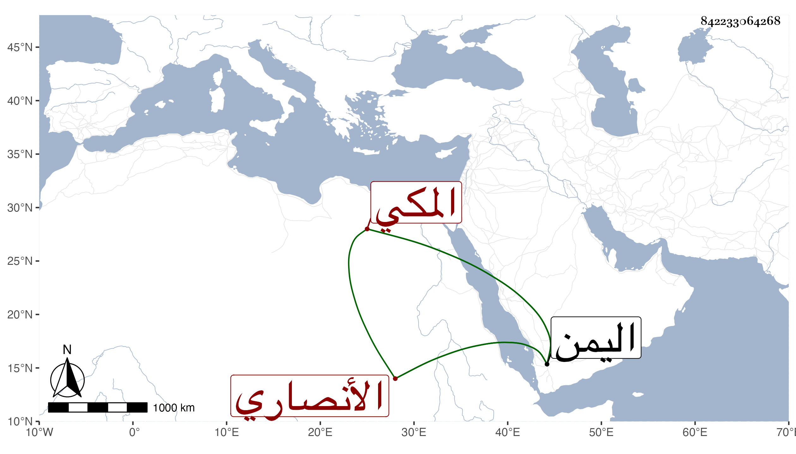

0902Sakhawi.DawLamic.ITO20230111-ara1.EIS1600.842233064268
Biography ID: 842233064268
993
علي بن محمد بن أبي بكر بن علي بن يوسف نور الدين بن العلامة النجم الأنصاري المكي الشهير بالمرجاني . سمع على ابن صديق الصحيح في سنة اثنتين وثمانمائة ثم على أحمد بن محمد بن عثمان الخليلي في سنة أربع جزء البطاقة وكذا سمع على الشهاب بن مثبت جزء البطاقة ومجالس الخلال العشرة وفي سنة ثمان وعشرين على الجزري بعض أبي داود وأجاز له في سنة ثمانمائة الخزرجي مؤرخ اليمن ثم بعدها خلق وتزوج وولد له وسافر إلى اليمن وعاد منها في البحر فمات به غريقا في .
